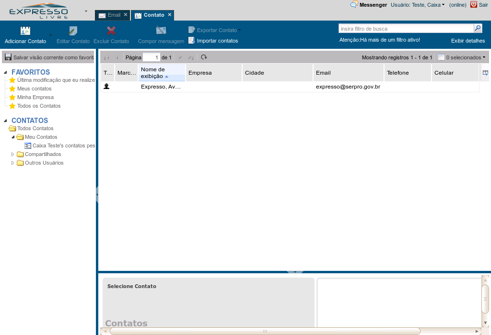

Uma das formas de se buscar contatos é utilizando diretamente o campo de busca.
Referência (copie para o Mantis o texto em vermelho):
demo_.html?interacao=187
2
demonstracao
188
1
65
916_42_36_22_632_96_295_-16
(Etapa xx de 12)
A lupa ou a tecla Enter realiza a busca e exibe os contatos encontrados na lista de contatos. E o botão X do campo de busca limpa a busca atual, mostrando todos os contatos da lista de contatos.Clique no botão "lupa"
Referência (copie para o Mantis o texto em vermelho):
demo_.html?interacao=188
190
2
65
882_65_82.4_25.4_644_118_273_-16

(Etapa xx de 12)
Se sua busca for mais complicada, clique no botão "Exibir detalhes" para incrementar os detalhes da busca.Clique no botão "Exibir detalhes"
Referência (copie para o Mantis o texto em vermelho):
demo_.html?interacao=190
3
demonstracao
191
1
66
198_95_42_39_197_162_6_-16
(Etapa xx de 12)
Os botões "+" e "-" são usados para adicionar e remover critérios de busca.
Referência (copie para o Mantis o texto em vermelho):
demo_.html?interacao=191
192
2
66
243_95_560_40_359_161_136_-16
(Etapa xx de 12)
Os campos dos critérios de busca devem ser preenchidos para refinar a busca.
Referência (copie para o Mantis o texto em vermelho):
demo_.html?interacao=192
4
demonstracao
193
1
67
809_115_81_19_571_157_267_-16
(Etapa xx de 12)
Clique no botão "Iniciar busca" quando os critérios estiverem preenchidos. Mais critérios podem ser adicionados ou removidos depois.Clique no botão "Iniciar busca"
Referência (copie para o Mantis o texto em vermelho):
demo_.html?interacao=193
194
2
67
807_94_26_20_640_141_174_-16
(Etapa xx de 12)
O botão X é utilizado para para limpar a busca atual, mostrando todos os contatos da lista de contatos.Clique no botão "X"
Referência (copie para o Mantis o texto em vermelho):
demo_.html?interacao=194
195
3
67
830_95_23_18_642_138_193_-16
(Etapa xx de 12)
Se você quiser salvar os seus critérios de busca, use o botão "Salvar"...Clique no botão salvar
Referência (copie para o Mantis o texto em vermelho):
demo_.html?interacao=195
196
4
67
0_96_184_27_209_96_-16_10
(Etapa xx de 12)
ou utilize o botão "Salvar visão corrente como Favoritos".Clique no botão Salvar visão corrente como Favoritos
Referência (copie para o Mantis o texto em vermelho):
demo_.html?interacao=196
5
demonstracao
197
1
68
344_246_277_165_318_98_149_118
(Etapa xx de 12)
Uma janela é aberta para nomear esta busca, que será salva nos Favoritos.
Referência (copie para o Mantis o texto em vermelho):
demo_.html?interacao=197
198
2
68
4_217_178_13_209_213_-16_10
(Etapa xx de 12)
Com o nome salvo nos Favoritos, esta busca personalizada pode ser recuperada rapidamente.
Referência (copie para o Mantis o texto em vermelho):
demo_.html?interacao=198
199
3
68
51_229_159_87_241_227_-16_10
(Etapa xx de 12)
Se posteriormente for necessário editar, apagar ou sobrescrever uma busca nos Favoritos, clique com o botão direito sobre ela e selecione a opção correspondente.
Referência (copie para o Mantis o texto em vermelho):